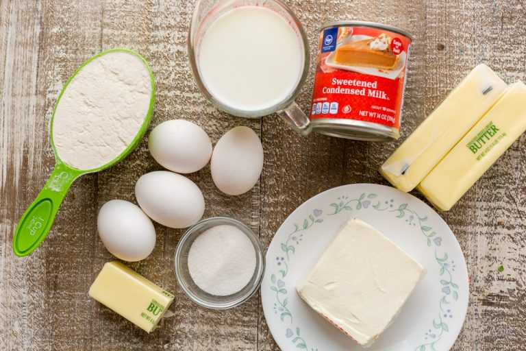

About crepe cake
Crepe Cake is a decadent and elegant classic French no-bake cake consisting of 20 layers of paper thin crepes, each separated with a brush of French pastry cream. This cake tastes delicious and has great texture. It does not take much effort to make this cake – just a little time and patience. It does take a while to make each crepe, but the end result is worth it!
For the Crepes (makes 15 layers):
1/2 cup warm water
1 cup 2% milk
4 large eggs
4 Tbsp unsalted butter melted, plus more to sauté
1 cup all-purpose flour measured correctly
2 Tbsp granulated sugar
1/8 tsp salt
For the Crepe Cake Frosting:
1 cup unsalted butter, softened at room temp (16 Tbsp)
12 oz sweetened condensed milk (from a 14 oz can)
8 oz cream cheese softened at room temp
2 tsp vanilla extract